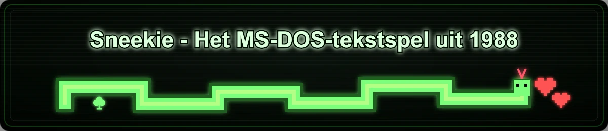

Sneekie
Sneekie - Het MS-DOS-tekstspel uit 1988

Start Sneekie in je browser en stuur de slang door alle 32 doolhoflevels zonder tegen pijlen, stenen of je eigen groeiende staart te botsen.
Klik op de afbeelding hierboven om zelf te spelen !
Verken het project
Geschiedenis
Het verhaal volgt Sneekie vanaf de BASIC-zomer van 1988, via publicatie in het tijdschrift, OCR-herstel en de browserport van 2026.

Magazine
Bekijk de originele pagina's uit MS(X)DOS Computer Magazine, inclusief de gedrukte listing die Sneekie bijna vier decennia bewaarde.

Speel het spel
Start de trouwe browserport en stuur Sneekie door alle 32 doolhoflevels uit het originele spel van 1988.

Broncode
De herstelde GW-BASIC-listing staat hier als nette, gekleurde broncode terwijl de oorspronkelijke regelnummers behouden blijven.

Bot
Bekijk hoe een moderne planner het echte spel in dezelfde pagina bestuurt en de diepe levels uitspeelt met dezelfde toetsen als een speler.

Handleiding
De handleiding bundelt besturing, puntentelling, gevaren, vijanden en de doolhofgalerij zodat de regels uit 1988 weer snel duidelijk zijn.

Uitleg
Volg de BASIC-listing per onderdeel, met aantekeningen die uitleggen wat elk bereik van regelnummers in het spel doet.

Migratie
Vergelijk de originele GW-BASIC-code en de JavaScript-port naast elkaar en zie hoe dezelfde ideeen naar de browser verhuisden.

VRAM-visualizer
De visualizer maakt het directe videogeheugenmodel tastbaar in een interactieve zandbak waarin elke peek en poke te volgen is.